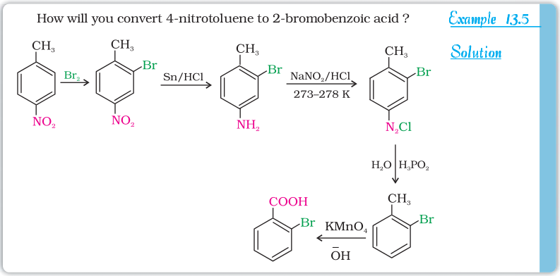

From the above reactions, it is clear that the diazonium salts are very good intermediates for the introduction of –F, –Cl, –Br, –I, –CN, –OH, –NO2 groups into the aromatic ring.
Aryl fluorides and iodides cannot be prepared by direct halogenation. The cyano group cannot be introduced by nucleophilic substitution of chlorine in chlorobenzene but cyanobenzene can be easily obtained from diazonium salt. Thus, the replacement of diazo group by other groups is helpful in preparing those substituted aromatic compounds which cannot be prepared by direct substitution in benzene or substituted benzene.